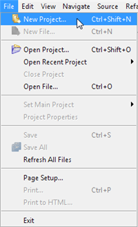
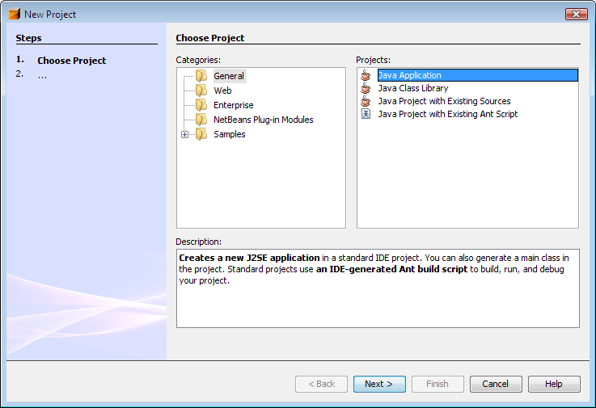
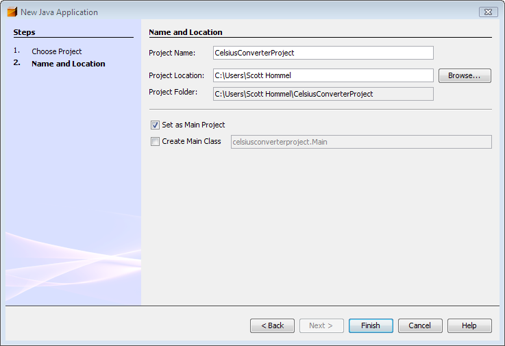
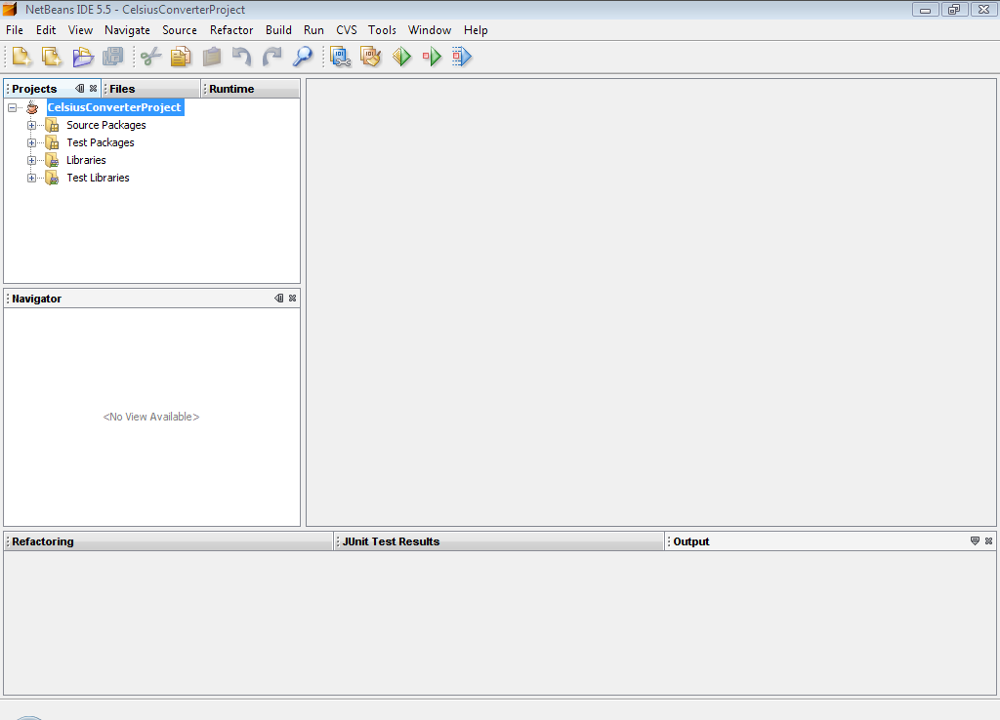
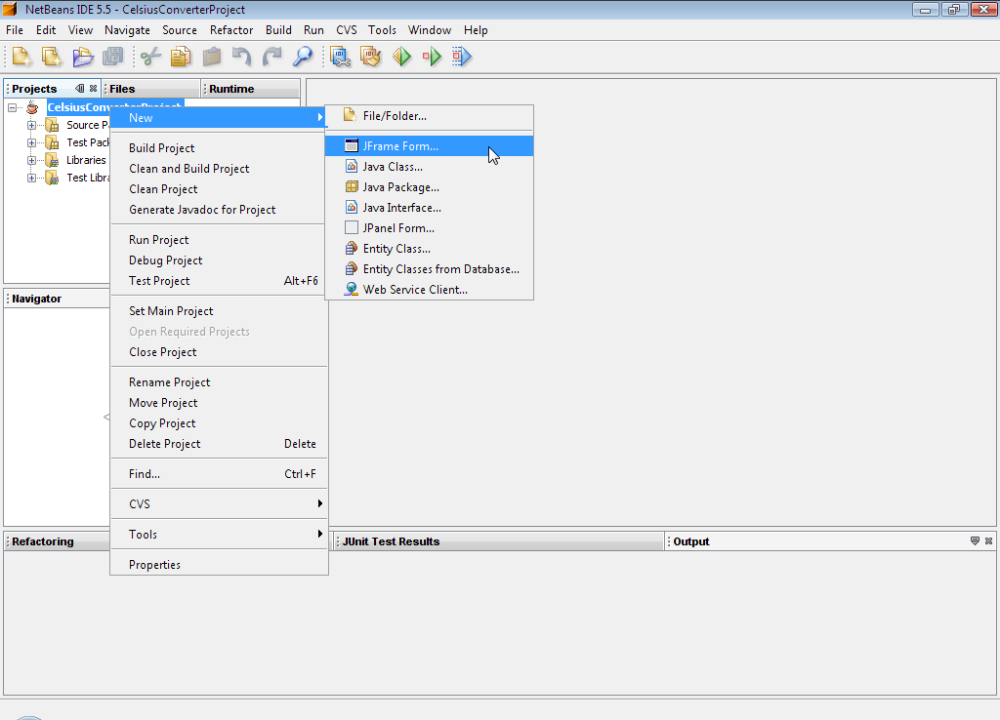
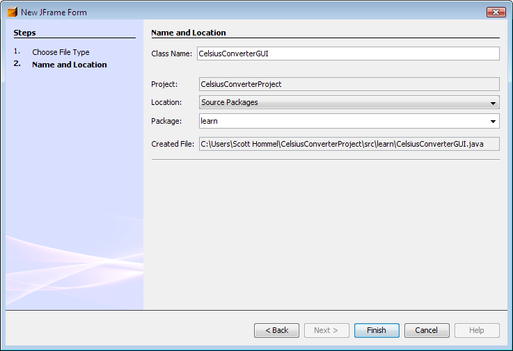
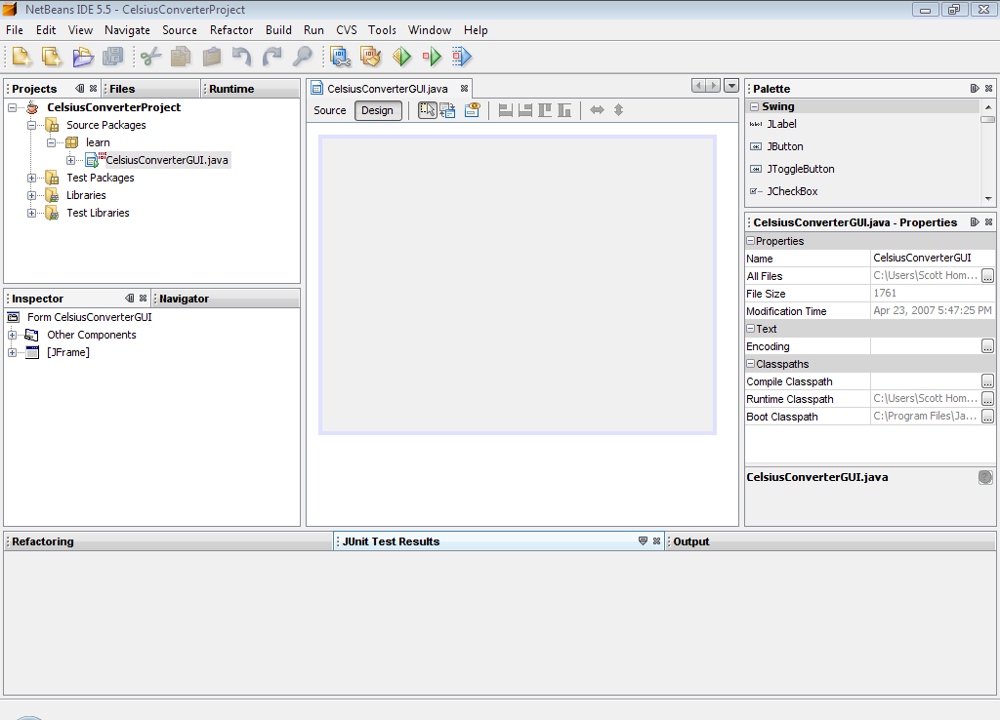

Si usted ha trabajado con el EID de NetBeans en el pasado, muchas partes de esta sección le parecerán familiares, ya que los pasos iniciales son similares para la mayoría de los proyectos. Sin embargo, los siguientes pasos describen configuraciones que son específicas a esta aplicación, así que tenga cuidado de seguirlas de cerca.
Para crear un nuevo proyecto, ejecute el EID de NetBeans y seleccione Nuevo Proyecto desde el menú Fichero:

Crear un Nuevo Proyecto
Los atajos de teclado para cada comando aparecen lo más a la derecha de cada item del menú. La apariencia del EID NetBeans puede variar entre plataformas, pero la funcionalidad será la misma.
A continuación, seleccione General desde la columna Categorías, y Aplicación Java desde la columna Proyectos:

Esta figura ha sido reducida para que se ajuste a ésta página.
Pulse sobre la imagen para verla en
su tamaño natural.
Puede notar la mención de "J2SE" en el panel de descripción; ese es el nombre antiguo para lo que es ahora conocido como la plataforma "Java SE". Presione el botón etiquetado "Siguiente" para proceder.
Ahora introduzca "CelsiusConverterProject" como el nombre del proyecto. Puede dejar los campos de Localización del Proyecto y Carpeta del Proyecto establecidos en sus valores predeterminados, o pulsar el botón Navegar para seleccionar una localización alternativa en su sistema.

Esta figura ha sido reducida para que se ajuste a ésta página.
Pulse sobre la imagen para verla en
su tamaño natural.
Asegúrese de deseleccionar la casilla de verificación "Crear Clase Main"; dejar esta opción seleccionada genera una nueva clase como punto de entrada principal para la aplicación, pero nuestra ventana principal del IGU (creada en el siguiente paso) servirá ese propósito, así que activar esta casilla no es necesario. Pulse el botón "Finalizar" cuando lo haya hecho.

Esta figura ha sido reducida para que se ajuste a ésta página.
Pulse sobre la imagen para verla en su
tamaño natural.
Cuando el EID finalize la carga, verá una pantalla similar a la de arriba. Todos los paneles estárán vacíos excepto el panel Proyectos en esquina de arriba a la izquierda, el cual mostrará el proyecto creado recientemente.

Esta figura ha sido reducida para que se ajuste a ésta página.
Pulse sobre la imagen para verla en su
tamaño natural.
Ahora pulse el botón derecho del ratón sobre el nombre CelsiusConverterProject y seleccione Nuevo ->
Formulario JFrame (JFrame es la clase Swing responsable del cuadro principal de su aplicación).
Aprenderá cómo designar esta clase como el punto de entrada de la aplicación más tarde en esta lección.
A continuación, escriba CelsiusConverterGUI como el nombre de la clase, y learn como
el nombre del paquete. En realidad usted puede nombrar este paquete como quiera, pero aquí seguiremos la
convención del tutorial de nombrar el paquete como la lección en la cual reside.

Esta figura ha sido reducida para que se ajuste a ésta página.
Pulse sobre la imagen para verla en su
tamaño natural.
El resto de los campos deben rellenarse automáticamente, como se muestra arriba. Pulse el botón Finalizar cuando esté hecho.

Esta figura ha sido reducida para que se ajuste a ésta página.
Pulse sobre la imagen para verla en su
tamaño natural.
Cuando el EID termina la carga, el panel derecho mostrará una vista gráfica, en tiempo de diseño de
CelsiusConverterGUI. Es en esta pantalla donde visualmente arrastrará, dejará caer y manipulará
varios componentes Swing.